const _toggleFullScreen = function _toggleFullScreen() {
if (document.fullscreenElement || document.mozFullScreenElement || document.webkitFullscreenElement) {
if (document.cancelFullScreen) {
document.cancelFullScreen();
} else {
if (document.mozCancelFullScreen) {
document.mozCancelFullScreen();
} else {
if (document.webkitCancelFullScreen) {
document.webkitCancelFullScreen();
}
}
}
} else {
const _element = document.documentElement;
if (_element.requestFullscreen) {
_element.requestFullscreen();
} else {
if (_element.mozRequestFullScreen) {
_element.mozRequestFullScreen();
} else {
if (_element.webkitRequestFullscreen) {
_element.webkitRequestFullscreen(Element.ALLOW_KEYBOARD_INPUT);
}
}
}
}
};